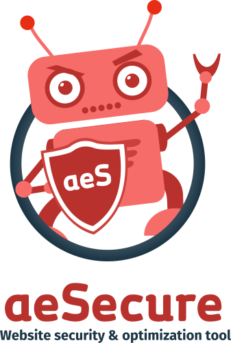

aeSecure - Sécurité des sites Joomla!®
v1 13/12/2016Raccourcis clavier
| Prochain slide | Touche d'espacement |
| Se déplacer | ←, →, ↓ et ↑ |
| Plein écran | F |
| Commentaires | S |
| Voir les vignettes | Esc |
Vous pouvez aussi utiliser la roulette de votre souris pour afficher le prochain slide.
Qui suis-je ?

- Développeur d’aeSecure, solution de sécurisation, d’optimisation et de nettoyage de sites web Apache
- Administrateur Joomla! France (cavo789)
- Membre fondateur de la JUG! Wallonie
Télécharger cette présentation
Cette présentation est téléchargeable pour lecture en mode offline et/ou afin d'en simplifier son impression : format pdf
Vidéo en ligne
 https://www.youtube.com/watch?v=UZxIDQRwH88&t=415
https://www.youtube.com/watch?v=UZxIDQRwH88&t=415
Objectifs de cette présentation
En collaboration avec Cinnk.com
- Travailler de manière sécurisée,
- Préparer son environnement de travail afin qu'il soit sécurisé,
- Comment sécuriser son site web,
- Comment identifier des hacks sur son site web,
- Nettoyer un site hacké
1. Travailler de manière sécurisée
10 protections de base pour sécuriser son site Joomla! :: http://cinnk.com/magazine/mai-2016/690-10-protections-de-base-pour-securiser-son-site-joomla
1.1. Choisir un hébergeur de qualité
N'optez pas pour le moins cher, pour celui d'un ami, proche de chez vous géographiquement, ... mais pour celui qui vous assure un suivi constant de ses serveurs (versions PHP, disques SSD, ...), celui qui prend des backups de votre site, ...
Et surtout!, un hébergeur pro-actif et qui réponds à vos demandes de support
1.2. Un seul site par hébergement
En principe : un client = un hébergement = un serveur FTP
Cas vécu personnellement : "Monsieur aeSecure, mon site a été hacké, pourriez-vous m'aider ?". Et là, horreur, 48 sites sur le même FTP (/site1, /site2, ... /site48).
Un virus dans /site1 pouvant se propager partout, ce n'est donc pas un site à traiter mais 48 et en une fois sinon le /site1 ayant été nettoyé peut être à nouveau contaminé par /site48
1.2. Un seul site - Complément
Ne conservez pas d'anciennes versions de votre site (/_vieux_sites) sur votre FTP, cela ne sert à rien du tout.
Vous augmentez très considérablement la surface d'attaque avec des sites / programmes qui ne seront plus jamais mis à jour
J'ai déjà retrouvé un Joomla 1.0 p.ex. alors que le site de production était en J3.6.x
Téléchargez sur votre ordinateur les vieux sites, les tests, les démos, ... et supprimez-les de la production
1.3. Gestion des mots de passe
A titre personnel, j'utilise depuis plusieurs années LastPass qui est un "coffre-fort", un gestionnaire de mot de passe.
Hormis deux ou trois mots de passe, je ne connais pas les centaines d'autres que j'utilise qui sont à usage unique.
Lire plus : https://www.aesecure.com/fr/blog/60-bien-choisir-son-mot-de-passe.html
1.4. Protégez votre propre ordinateur
Même sous Mac ! Ayez un antivirus à jour et gardez-vous d’utiliser certains logiciels dont la sécurité est défaillante, comme le réputé FileZilla qui stocke en clair les accès FTP dans un fichier xml, préférez par exemple WinSCP (Windows) ou CyberDuck (Mac) ; pour n’en citer que deux.
1.5 Soyez attentif
- N'utilisez pas d'anciens navigateurs démodés
[/Private Joke]Qui utilise encore Internet Explorer?[/Private Joke], - Avez-vous besoin du player Flash ? Non, supprimez-le de votre navigateur !,
- ... et java ?,
- Sur un WIFI public, utilisez obligatoirement un VPN privé (par exemple HideMyAss),
- ...
2. Préparer son environnement de travail afin qu'il soit sécurisé
2.1. Un ordinateur propre
- Ayez un antivirus, actif en tâche de fond et scanner régulièrement votre ordinateur. But : zéro virus,
- Ayez un antimalware et évitez aussi d'avoir ce type de bestioles,
- N'installez que le strict nécessaire pour votre navigateur : pas de compléments (addons) exotiques et superflu,
- Mode ultime : administrez vos sites depuis une fenêtre protégée (exemple Avast SafeZone Browser),
- ...
2.2. Un client FTP sécurisé
Si vous utilisez FileZilla, vérifier plutôt deux fois qu'une que vos données de connexion ne sont pas stockées dans un fichier .xml non crypté car sinon un hackeur qui aurait accès à votre disque dur aurait de fait accès à ce fichier .xml
Personnellement, étant sous Windows, j'utilise WinSCP.
2.3. Et préférez le SFTP si disponible
Si votre hébergeur vous le permet (si pas, changez-en!), optez pour une connexion SFTP où le login et le mot de passe ne transite pas en clair sur le réseau.

3. Comment sécuriser son site web
La sécurité et Joomla!® pour apprendre à sécuriser votre site web : https://www.aesecure.com/fr/blog/joomla-securite.html
3.1. Seulement les versions les plus récentes
Ne créez pas un nouveau site sur une vieille version de Joomla!®, cela n'a aucun sens. Téléchargez systématiquement la dernière version.
3.2. Ne conservez que le strict minimum
Ne conservez jamais des templates inutilisés, des composants dont vous n'avez plus besoin, ... Ils pourraient ne plus être mis à jour et contenir des failles qui se révèleront des portes d'entrée.
Et faites cela régulièrement : nettoyez, nettoyez, nettoyez...
3.3. Faites un suivi scrupuleux des versions (CMS, composants, plugins, ...)
Ne ratez aucune mise-à-jour de sécurité. AUCUNE !
AUCUNE !!
AUCUNE !!!
3.4. Utilisez un logiciel de supervision
Pour simplifier votre vie de gestionnaire, pour savoir quelles versions sont installées, pour mettre à jour vos sites, ... utilisez un système de supervision comme
https://watchful.liVoir aussi https://perfectdashboard.com/
aeSecure Pro multi-sites propose également une interface de surveillance de vos sites (version du CMS, de Apache, PHP et fonctionnalités d'aeSecure activées)
3.5. Installez un pare-feu

3.6. Activez les sécurités de base et spécifiques à votre site
- Faites de l'obfuscation (activation SEF, bloquez certaines URLs (?tp=1), ...),
- Gérer au plus fin les droits d'accès (ACLs) et les chmods,
- Protégez vos dossiers sensibles (IP, .htpasswd, ...) et votre administration (Two factors Authentication, Yubikey, ...)
- Interdisez l'exécution de code PHP dans certains dossiers,
- ...
3.7. Installez une tâche planifiée
Si vous avez accès à un crontab chez votre hébergeur, planifiez des scripts d'analyse comme p.ex. un script qui détecterait un fichier ayant été modifié et vous enverrait une alerte, un script qui détecterait des nouveaux utilisateurs s'étant inscrit sur votre site, un script qui prendrait des backups de votre base de données, ...
aeSecure Pro fait cela...
3.8. Backups, backups, backups
Idéalement à stocker ailleurs que chez votre hébergeur (imaginez un incendie ou que vous oubliez de payer votre renouvellement) et à tester de temps à autre pour garantir que le backup est complet (ne pas découvrir qu'il ne contient pas la base de données, ...) et que le fichier ne soit pas corrompu
3.9 HTTPS
Installez un certificat SSL pour sécuriser le transfert d'informations (p.ex. login/password) entre votre client et votre serveur. SSL garanti que les échanges soient cryptés.
Lire https://cinnk.com/joomla/3/tutoriels/le-https-facilement-sur-son-site-joomlaSi vous souhaitez tester la validité et la sécurité d'un certificat : https://www.ssllabs.com/ssltest/analyze.html
3.10 Penetration test
Il existe des outils qui permettent de tenter d'infiltrer des sites web càd de simulations d'attaques afin de voir comment ils se comportent : sont-ils failibles à une attaque XSS, cross site scripting, SQL injection, ...
- theHarvester is a tool for gathering e-mail accounts, subdomain names, ...
- Burp Suite the leading toolkit for web application security testing
- The OWASP Zed Attack Proxy (ZAP) is one of the world’s most popular free security tools
- Nikto is an Open Source (GPL) web server scanner
- Nmap ("Network Mapper") is a free and open source (license) utility for network discovery and security auditing
- Maltego est un outil qui permet de récupérer et agréger des informations dans le but de faire du footprinting
- Fierce is a PERL script that quickly scans domains using several tactics
- WhatWeb recognises web technologies including content management systems (CMS), ...
- Hydra, tool for brute forcing crack a remote authentication service
- ...
À utiliser strictement sur vos propres sites et idéalement en local.
4. Comment identifier des hacks sur son site web
Est-ce que mon site a été hacké ? Est-il propre ? Comment m'en assurer ? : https://slides.aesecure.com/hacked/index.html
4.1. Google SERPs

De temps en temps, faites une recherche sur votre propre site, voyez si aucune nouvelle page est référencée et qui ne serait pas de vous.
* site:monsite.com
4.2 Mention (veille)

En utilisant un logiciel de veille, on peut être averti par email. Ici mention.com avec une veille sur un mot qui est, ici, un dossier du site.
4.3. aeSecure QuickScan ?
aeSecure QuickScan est un scanner gratuit supportant nativement 22 CMS.
- Scanner php universel gratuit qui permet de détecter rapidement des fichiers suspects sur son site et de vous permettre de les supprimer.
- Concept de liste blanche et de liste noire pour optimiser le scan.
- Disponible en Français, Néerlandais et Anglais.
4.4 D'autres scanners
À côté d'aeSecure QuickScan, vous avez d'autres outils :
4.5. Se fier aux dates ?

En php, l’instruction touch() permet de réinitialiser la date de
dernière modification.
Si j’étais un pirate, mon virus détecterait d’abord la date
courante du fichier pour injecter mon virus et rétablir cette date quand l’injection a été
faite.
Toutefois, avoir dans un dossier de nombreux fichiers avec une même date et un
intrus, oui, il est utile d’aller voir ce que contient l’intrus.
4.6. Certains fichiers à surveiller
Les fichiers ci-dessous sont assez régulièrement hackés :
/administrator/includes/defines.php,/includes/defines.php,/templates/…/index.php(ceci pour tous les templates)
4.7. Exemples
SetHandler application/x-httpd-php
Lorsque vous avez un fichier .htaccess dans un dossier, quel que soit le dossier, il est utile de l’éditer pour prendre connaissance de son contenu. Un tel fichier peut p.ex. rendre exécutable … une image.
<FilesMatch "bananas_1.jpg">
SetHandler application/x-httpd-php
</FilesMatch>
Un fichier .htaccess où vous trouvez un SetHandler application/x-httpd-php est donc suspect.
4.7. Exemples
Un script caché derrière une ... GIF
4.7. Exemples
Une image jpg... Ben non
4.7. Exemples
Un faux plugin Joomla!®

4.7. Exemples
Faux fichier robots.txt

4.7. Exemples
Une fausse page 404
4.7. Exemples
Un dernier exemple...
5. Nettoyer un site hacké
Votre site a été hacké, que faire ? pour apprendre à le nettoyer par vous-même : https://www.aesecure.com/fr/blog/site-hacke.html
5.1. Vous avez un backup sain et récent
- Prenez un backup de votre site vérolé, téléchargez-le en local,
- Supprimez votre site et restaurez-le votre backup qui était sain,
- Sécurisez votre site (nettoyez, mettez à jour, installez une sécurisation, ...),
- Prenez un backup du site ayant été sécurisé
5.2. Vous n'avez pas de backup sain et récent
Voyez avec votre hébergeur, puisqu'il est sérieux, il a pris des backups automatisés pour vous (non? quittez-le sans délai!)
Nettoyer un site "à la main" est une opération compliquée, requérant du temps et de la méthodologie.
5.3. Nettoyer à la main
- Prenez un backup de votre site vérolé, téléchargez-le en local,
- En local,
- restaurez une copie du site en localhost (n'affichez pas le site!!!),
- supprimez tout sauf le dossier /images et /media et d'éventuels dossiers n'appartenant pas à Joomla!® et scanner ces dossiers (à la main ou avec QuickScan),
- réinstallez une version propre de Joomla, des composants qui étaient utilisés, templates, modules, plugins, ...,
- sécurisez le site,
- testez votre site pour voir s'il est fonctionnel
Cette méthode est longue et requiert que vous ayez encore une version de tous les logiciels payants que vous aviez sur ce site.
6. Être éveillé
6.1. Gardez votre site propre
- N'installez pas n'importe quoi sur votre site de production, les sites de test, en localhost, servent à ça,
- Bannissez, même "juste pour voir", les logiciels téléchargés de sources douteuses,
- Vous donnez un accès admin à quelqu'un pour du support ? Supprimez l'accès dès que la tâche est finie; changez vos accès FTP et base de données,
- ...
6.2. Restez à l'écoute
- Joomla! Developer Network | Security Announcements
- Un doute ?, posez votre question sur un forum francophone (joomla.fr, aide-joomla.com ou cinnk.com)
- Sur Facebook, suivi un groupe Joomla!, recherchez les groupes "joomla fr", "aide-joomla", "JUG" ou "Joomla! User Group" un/une JUG est une association d'utilisateurs de Joomla!, peut-être en existe-t-il une dans votre ville
- Et si vous êtes sur Twitter, suivez les mêmes ;-)
6.3. Protégez vos visiteurs
Sans tomber dans la paranoïa, songez au pistage probable de vos visiteurs :
- Faut-il vraiment ce bouton Google+, Facebook et autres liens de partage sociaux sur toutes vos pages ? (info GAFAM)
- Au final, vous ne consultez jamais vos stats Google Analytics => supprimez le script GAnalytics
- Évitez les services tiers comme Disqus qui pistent vos visiteurs sans leur autorisation (info)
- ...
Merci pour votre attention!
- Blog: aesecure.com
- Twitter: @aeSecure
- Facebook: aeSecure
- Slides: https://www.avonture.be/aesecure_slides_security
- Email: christophe AT avonture.be